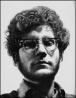

The Minneapolis Institute of Arts
Main Menu ~ Permanent Collection List ~ Interactive Museum Maps ~ Back ~ Next
20th-Century Art
 (c) 16k
See examples of late 20th-century trends in European and American art. Included are paintings by Max Beckman, Georgia O'Keefe, Joan Miro, Grace Hartigan, and Chuck Close.